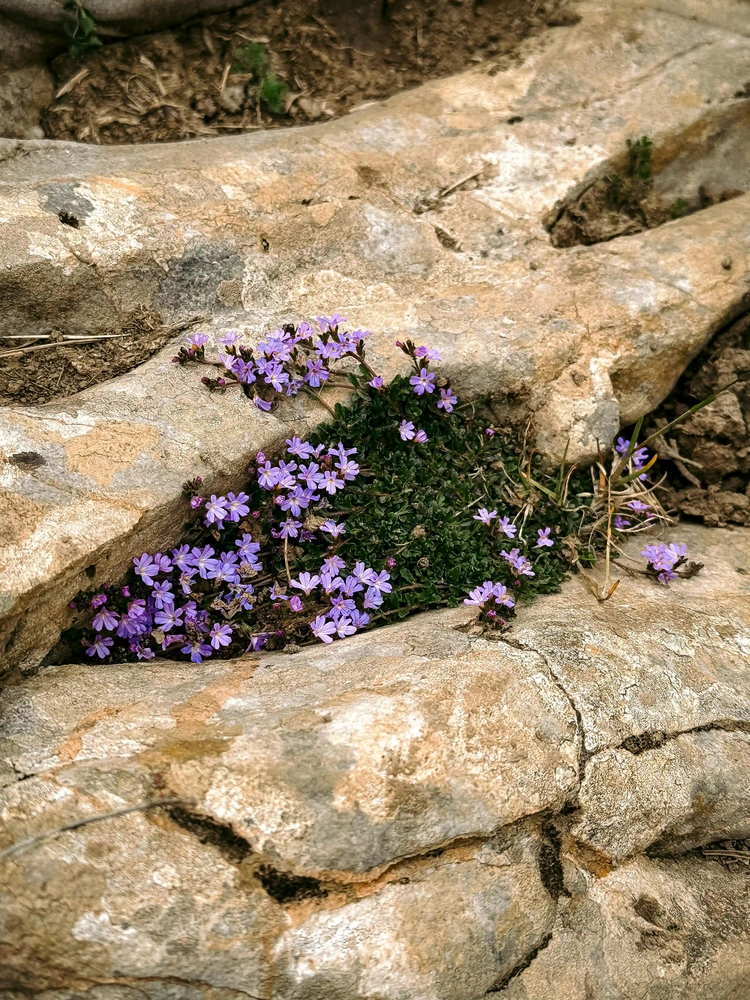
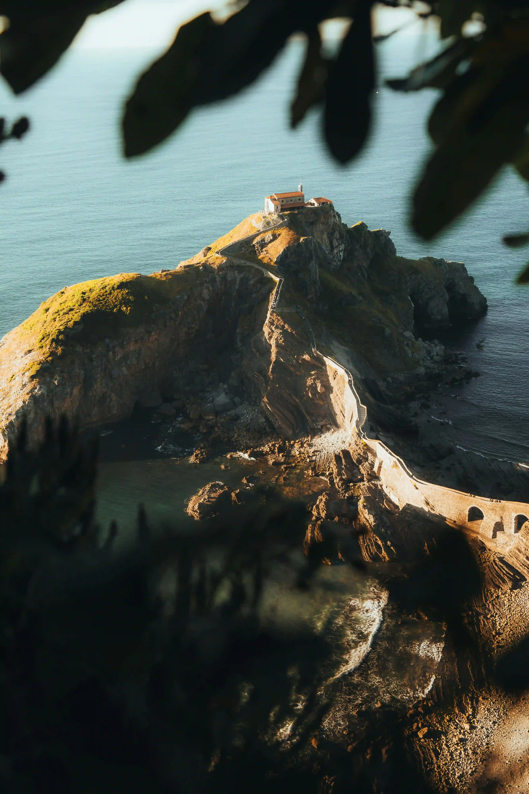
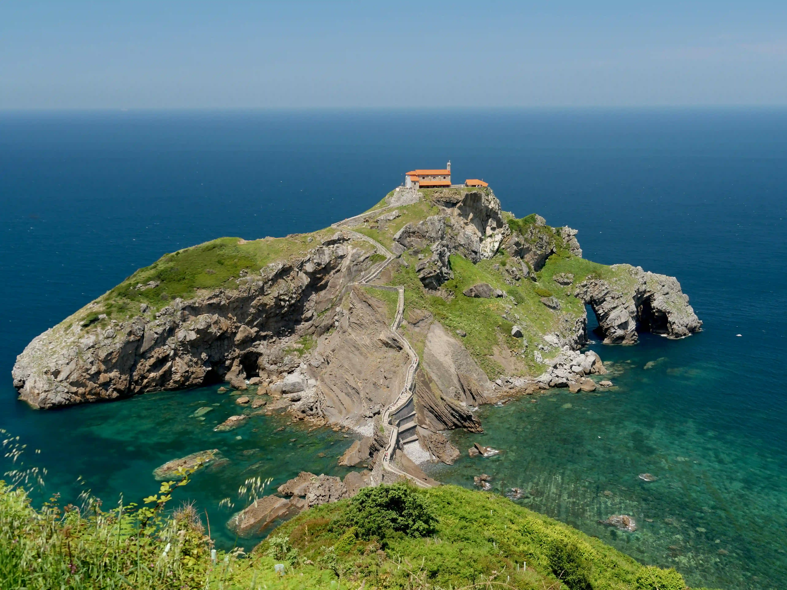
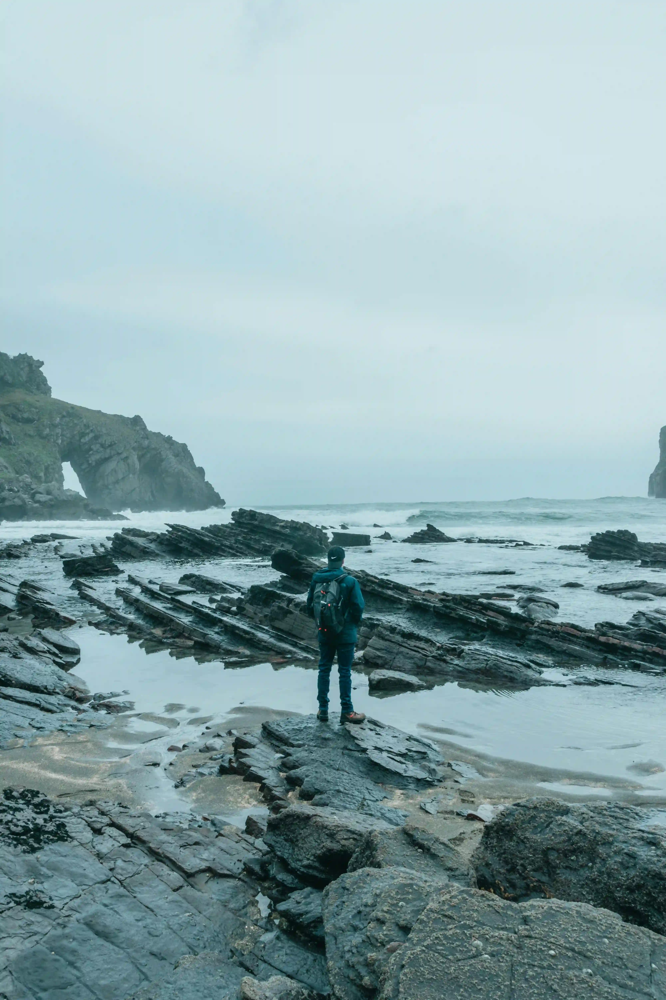
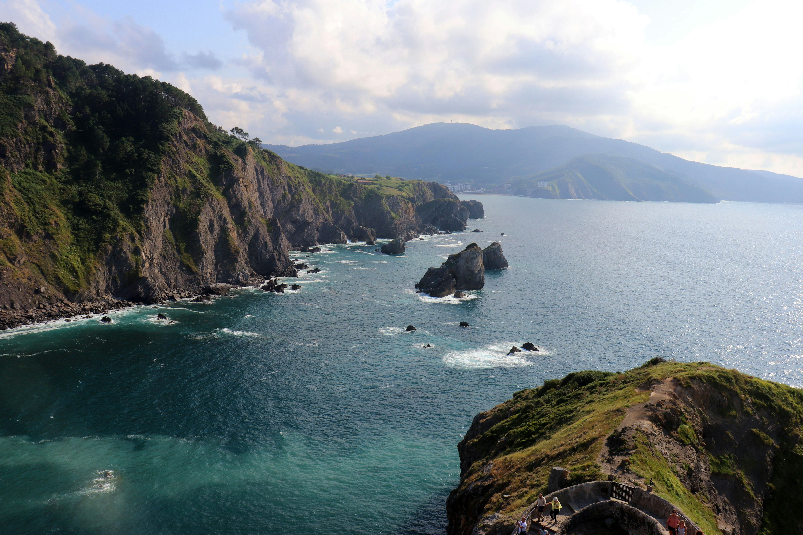
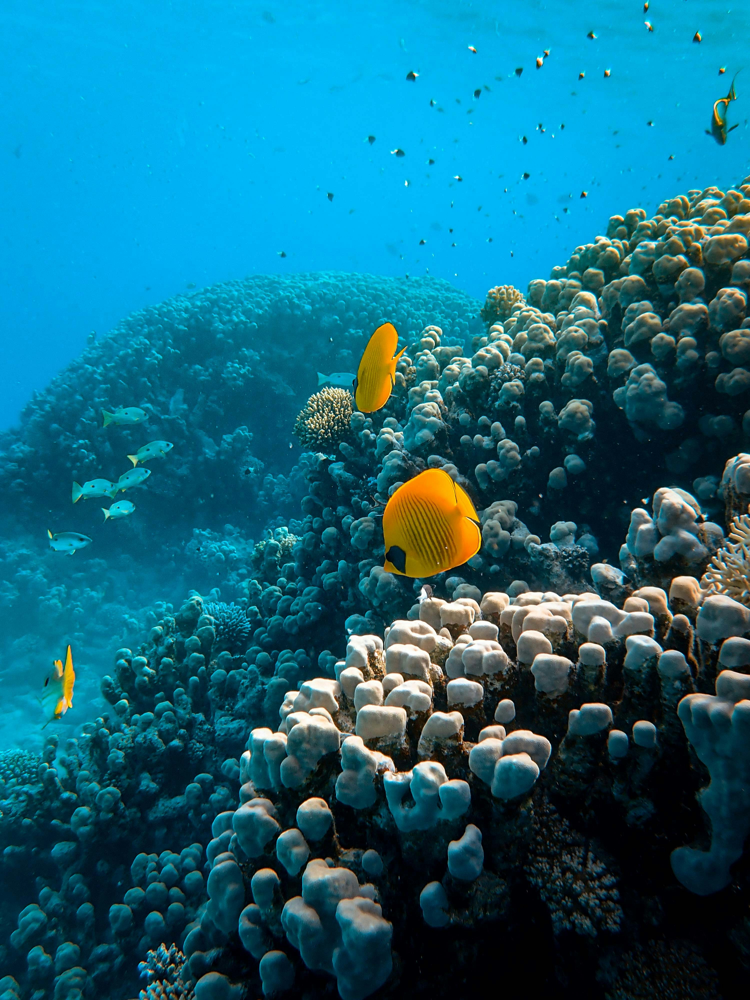

Interactive Map
San Juan de Gaztelugatxe
Explore the coastline, landmarks, and key locations of this iconic Basque Country destination.
- Hover markers to preview
- Click markers to open location details
- Toggle the legend for the full key
Map Legend

Four Seasons




Things to do

Book Tickets
Stone bridge, five ascending sections, one hermitage at the top. Takes most people about an hour.
View More
Visit via Boats
Boat from Bermeo gives the full view: islet rising from the Atlantic, hermitage at its peak.
View More
Guided Tours
2 km from Bakio along open clifftops. The island appears slowly . silhouette first, then full detail.
View More